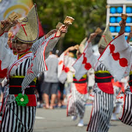
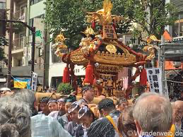
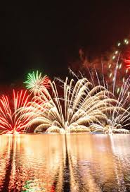
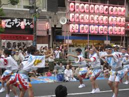

Hakata Gion Yamakasa

Das Hakata Gion Yamakasa ist ein traditionelles japanisches Festival, das jährlich in der Stadt Fukuoka, genauer gesagt im Stadtteil Hakata,
stattfindet. Es beginnt am 1. Juli und endet am 15. Juli, wobei der Höhepunkt des Festes der "Oiyama" am 15. Juli ist, bei dem ein aufregendes Wettrennen stattfindet.
Das Festival zieht jedes Jahr tausende von Besuchern und wird als eines der größten und bekanntesten Feste in Japan gefeiert. Im Jahr 2016 wurde es sogar von
der UNESCO als immaterielles Kulturerbe der Menschheit anerkannt.
Wichtige Merkmale
- Yamakasa (山笠):
- Diese sind große, mit Dekorationen verzierte Tragen, die im Zentrum des Festes stehen. Es gibt zwei Arten von Yamakasa:
- Kakiyama (舁き山): Diese Tragen sind etwa drei Meter hoch und zeigen oft Szenen aus der japanischen Geschichte oder Mythologie. Sie werden von den Teilnehmern während des gesamten Festivals getragen und sind meist in verschiedenen Stadtteilen zu sehen.
- Kazariyama (飾り山): Diese Tragen sind deutlich höher, bis zu zehn Meter, und sehr aufwendig dekoriert. Sie sind kunstvoll verziert und stellen oft Geschichten oder berühmte Figuren dar. Im Gegensatz zu den Kakiyama werden sie jedoch nicht durch die Straßen getragen, sondern stehen während des Festivals an bestimmten Ausstellungsorten.
Mehr Information Dazuhier

Tah1>

